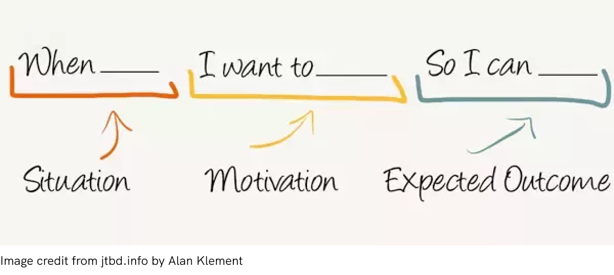
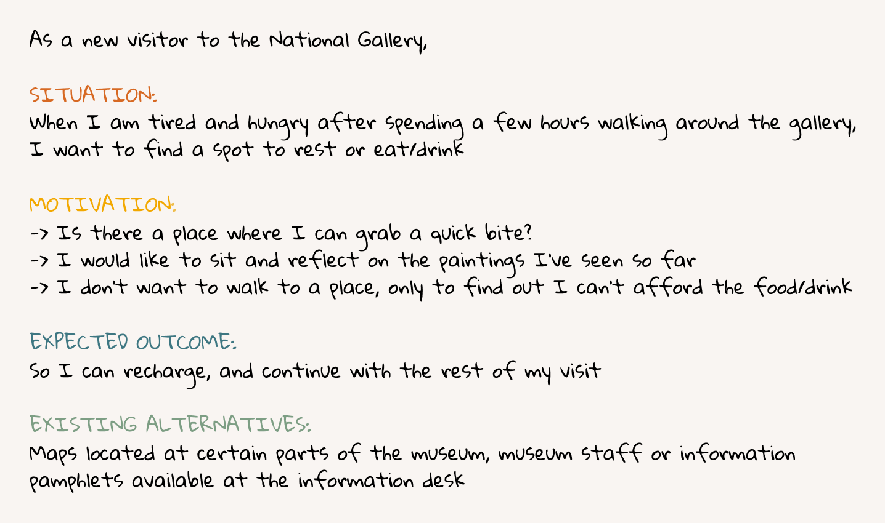
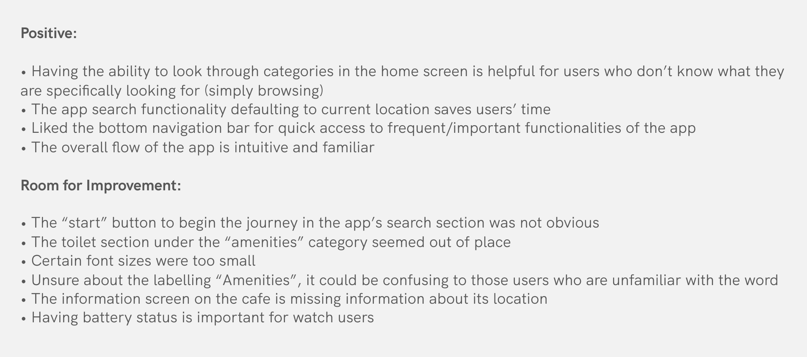

Project Background
The National Gallery (London, UK) is an international tourist destination that receives more than 1.5 million visitors per year. Housing 2300 paintings with 66 different rooms to explore, navigating through the gallery’s collection can be daunting, especially for tourists on a tight schedule. As a tourist who visited the gallery, I loved the overall experience, but was often lost and spent precious time trying to locate paintings (and my companions!)
Thus, I took this opportunity to design a mobile app that would improve the navigation experience for visitors.
Date
Mar 2019
Platform
Mobile App
Method
User Stories
Design Critique
Tools
Figma
Overview of Process
Sketching Phase and Feedback
Creating user stories
I started off by creating a few user stories to describe possible contexts, motivations, and outcomes for the target users. Similar to a persona, the stories identify user challenges and opportunities for design intervention, which I used to inform user goals for this project.
Format used to create user stories:

One of the user stories I created:

Rough Sketching
With the user stories in mind, I started with rudimentary sketches in order to get ideas out without the pressure of committing to one design. Doing so allowed me to quickly iterate between different versions and pick one that best suit user goals.
Feedback from Sketches
I also got my UXD peers to critique and provide feedback on the sketches, to help inform the design for the medium and high fidelity designs. The main findings are:

Medium Fidelity Wireframes
Taking the feedback into consideration, I created wireframes, and also created annotated task flows, e.g. searching for the location of a particular painting, to understand the steps taken for common scenarios.
Task: Browse points of interest at the gallery
.png)
Task: Get information on current room/area
.png)
High Fidelity Mockups and Design Specs
To stay true to the gallery’s visual identity, I took inspiration from the National Gallery's website in creating the high fidelity design. I specifically chose colours, fonts and icons that would be consistent with the design of their current website.
1
Splash Screen (part of JMW Turner’s “The Fighting Temeraire”, one of Britain’s most well-loved paintings. Its composition symbolises the end of an era, and commencement of a new, industrial age.
.png)
2
Browse points of interest at the gallery
.png)
3
Find information on current room/area
.png)
4
Search for room or painting to navigate to
.png)
5
See list of all navigation steps
.png)
Design Specifications
In addition to the mockups, I also created a design specification document with details on font, icon, and button styling.
© 2021 by Gillian Chen